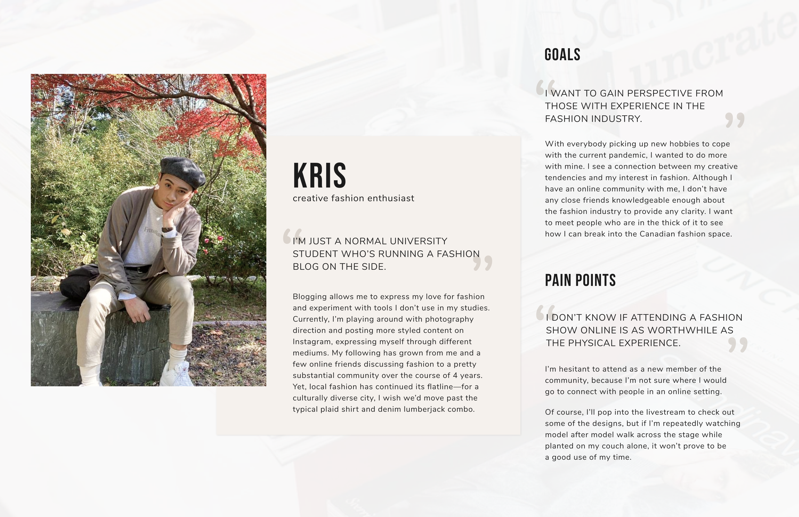
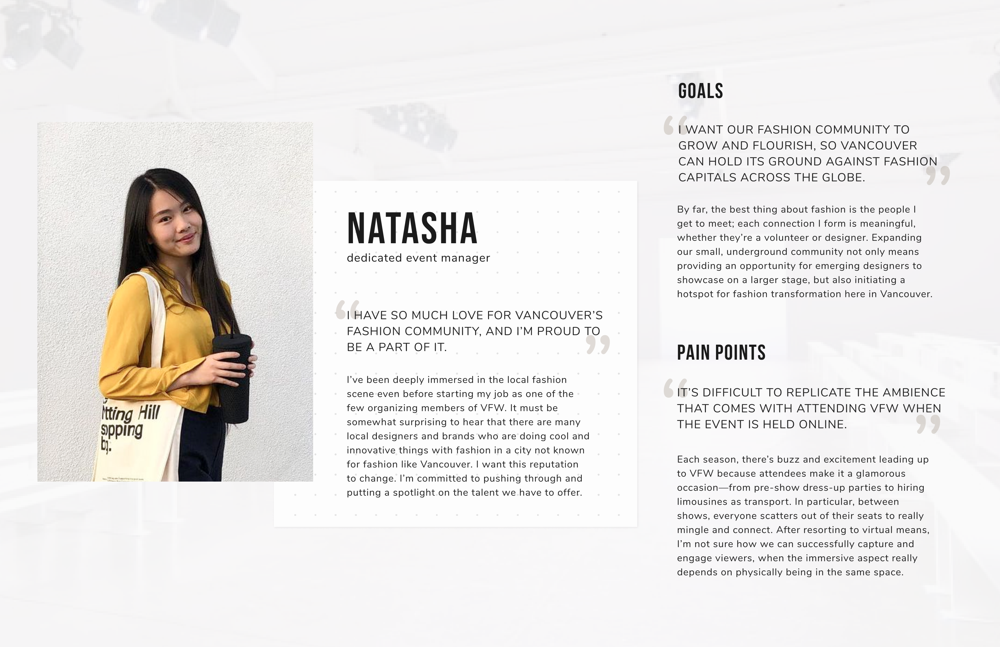
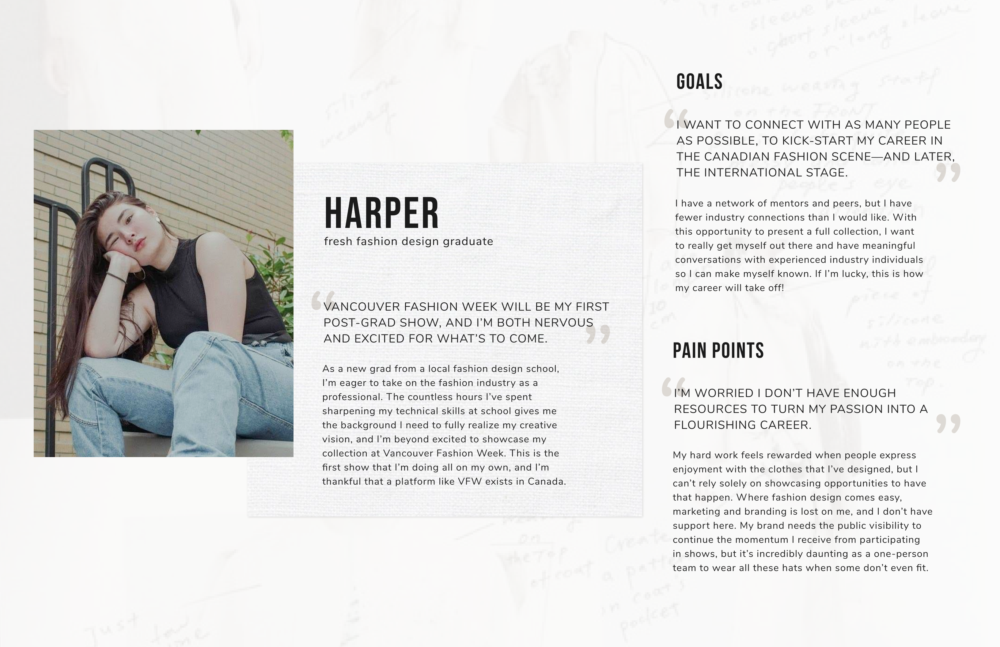
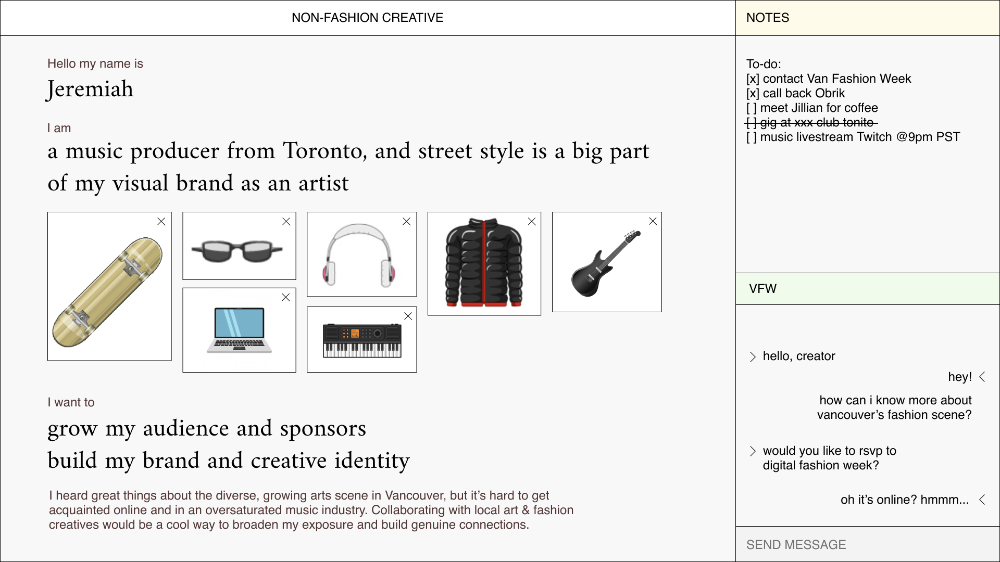
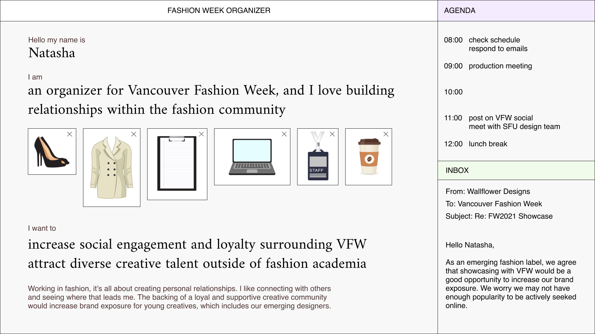
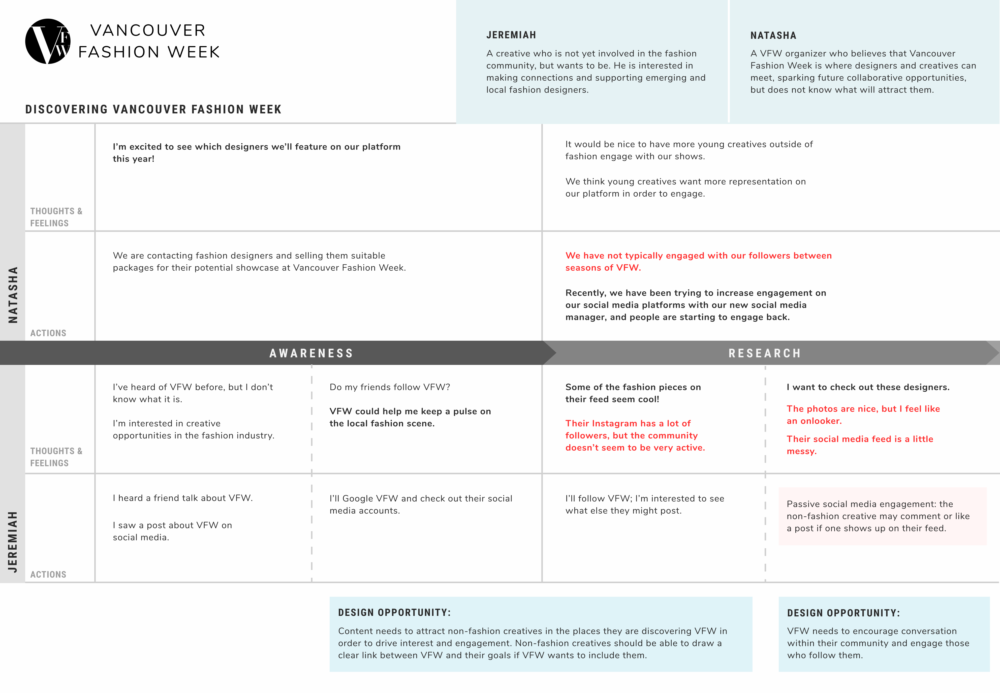
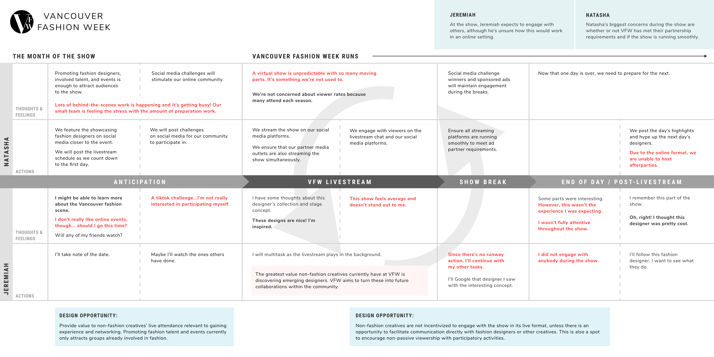

VANCOUVER FASHION WEEK WEB EXPERIENCE REFORM (ACADEMIC)
project synopsis
This was a semester project with a four-man team. We worked with Vancouver Fashion Week to design a solution for their dwindling viewership since the migration to a virtual platform. This project was overlooked by SIAT professor Ron Wakkary.
timeframe: three months

We were tasked to collaborate with a participant group and to find a design solution involving interaction design. This semester, our team had reached out to Vancouver Fashion Week (VFW) and had done extensive research on ethnography, user journeys, and design personas. Through this process we had also hosted two workshops to aid our concept idealization and had narrowed down our initial brainstorm process to a final concept.
tools used
- Figma
- Google Forms
- Google Docs
- Miro
ethnography research
To better understand the demographic of our target audience, we started off with a Google Form survey with the following questions:
demographic information
- What is your age?
- What is your gender identity?
- What is your ethnicity?
- What is your involvement with Vancouver Fashion Week? (Options: organizers, fashion designer, buyer, media, influencer, model, hair or makeup artist, event set-up team, general audience member)
- What Vancouver Fashion Week events or activities did you attend or participate? (Options: fashion shows, designer interviews, networking events, afterparties)
- How often do you attend fashion-centered events, including VFW?
experience at VFW
- Can you describe a memorable moment you had at VFW? What made this moment memorable for you?
- What are you expectations of VFW?
- How would you describe your lifestyle outside of fashion week?
- What does Canadian fashion mean to you?
- What's something you would change about the fashion industry and why?
data collection & methods
timeframe: 4 days
- 5 semi-structured video call interviews (30 min)
- online survey sent to past participants (19 responses)
- informal interview with VFW representative (30 min)
who?
- 8 past general audience attendees
- 3 model agency staff
- 3 models
- 2 from media
- 6 event staff
- 1 fashion buyer
We had sent this survey to a variety of people, including those working with the organization and attendees. For the first section, we wanted to better understand what our intended users would be- aside from age, gender identity, and ethnicity, we wanted to know what roles our intended user group would play into VFW, and how prevalent they are within the fashion community.
For the second section, we wanted to know about the general consensus of VFW. In our initial meeting with a VFW representative, they had already hashed out a basic rundown of their current issue- viewer counts have been lackluster since migrating to a online platform. A physical fashion show is vastly different from a livestream show, and we wanted to better understand why attendees valued their in-person experiences at these shows. In addition, we also wanted to know how respondants felt about the local fashion scene.

As a team, we had then taken all of our responses and put it together into a Figma file for affinity diagramming. In this process, we found that many attendees had inconsistent expectations with the organization of VFW shows, often finding that it was a bit disorganized with rude management. The portrayal of fashion week in media is also noted to be vastly different from what was actually featured at VFW shows. However, a main highlight of fashion week was the 10 minute break offered in between shows- attendees take this time to walk around and talk to others, taking this as an opportunity to network and create new connections.
In terms of the local fashion scene, many people felt that Vancouver had an identity crisis in fashion. Fashion within Vancouver was focused on function rather than appearance; for example, techwear, athletic wear, and raingear is a constant staple within Vancouver. There isn't anything significant in terms of fashion and overall was geared towards practicality. We also noticed that many within the community wish to have more inclusivity within the industry and had raised concerns about fast fashion and the negative impact it has.
With this information, we curated our initial design focus: We want to explore the local fashion community's interconnectedness, its barriers to entry, and how we might better facilitate Vancouver Fashion Week's attendee interactions in a virtual space.
personas & user journey maps
Even though we have a good idea of who attends VFW, we wanted to make sure we knew who to target in our design solution. Despite already having a solid audience demographic, the VFW organization committee wanted to include creatives working outside of fashion as means to introduce them into the industry and allow them to break out their careers.
We had a lot of struggles with this part because we initially weren't sure about what VFW meant by "young, non-fashion creatives." However, we did create a quick survey to send out to our peers. We wanted to know about how they felt about fashion, their creative aspirations or goals, and their interest in fashion and the local fashion scene.
For our first iteration, we created three personas which we felt matched the original audience group we had interviewed: Kris, a social media influencer; Natasha, a VFW event manager; and Harper, a freshly graduated fashion designer. These personas were made on the impression that VFW had wanted to focus on their existing demographic.
  Again, like mentioned earlier, this isn't the target audience VFW wanted, so we instead went back and reworked our personas. This time, instead of three, we created two personas. Our VFW representative had defined their ideal "young, non-fashion creative" as someone who has in interest in a creative field, but not necessarily in school for that career path. We took inspiration for our new creative persona from a local podcast called PressPlay, which focuses a lot on the underground creative culture within Vancouver. In this podcast, we learned that the local underground culture is very strong and how different communities and niches mix together.
We replaced Harper and Kris with a new persona: Jeremiah, a budding musician who moved to Vancouver in hopes of jump-starting his music career.
 Moving on to journey maps, after touching in with our representative, we had set up a board in Miro to map out a potential journey through a livestream show. We marked the board with a variety of sticky notes to indicate different thoughts, actions, and other important details. Using this board, we made note of potential design opportunities.

Similar to our personas, we made two iterations of our journey maps. For our first iteration, we made two separate maps signifying the journey prior to the livestream show and one during the livestream. Through our feedback session, we found that this design was not only difficult to read, there was a lack of clarity in events and design opportunites. Since we needed these maps to determine potential solutions, we needed to redesign these maps completely.
 In our second iteration, we separated our maps by persona- one focused on Jeremiah, the other on Natasha. It was made much easier to add more details for thoughts and design opportunties and we were able to have a better idea for different experiences for our two parties.


reframed design focus
Through our persona research, we discovered that our original design focus didn't fit the vision VFW had wanted and couldn't encompass the desires of our target audience group. In our surveys, we found that young creatives wanted connections and opportunities to expand their circle and find new clients. Many creatives had low interest in digital fashion shows as well since they didn't offer much benefits for those outside the fashion circle.


We had respondants look over VFW Instagram page as well during the interview process in which they responded that the content shared on VFW's page were either very lackluster, or just something one wouldn't see on a fashion show page. It was clear here that VFW's online presence was not very strong and that affected their viewership for online fashion shows. Furthermore, VFW's website is also very bland and doesn't have a lot of incentive for outsiders to want to attend a show. Instead of redesigning the format of the livestream show, what if we reworked the online presence of Vancouver Fashion Week?
Because in today's world many people discover events and organizations through social media and the internet, we switched gears to focus on creating a stronger community through a virtual space. We modified our design focus to this: How might we welcome non-fashion creatives to the Vancouver Fashion Week community by facilitating the interactions in virtual spaces?
workshops
With our new focus in mind, we conducted two 1.5 hour workshops- one with VFW organizers, and another with two non-fashion creatives. Even though we wanted to meet the needs of our target audience, we still needed to keep up with the expectations of the organizing team.
.png)
.png)
activities
All activities were taken from Design Kit by IDEO.
- card sort: using a selection of provided images or images of your own, each participant arranges their images in any way which best resonates with their views of the prompt. Participants can add keywords or phrases they find important to add to their board. This activity was meant to find what each participant found valuable from digital networking experiences.
- mashup: this activity involves a little more brain power- participants are to name aspects of the prompt (fashion, online communities, digital events) and qualities they want out of the aspect. They then name a brand or character which embodies the quality and mash up those answers into a singular question: what is the [blank] version of a [blank]? This gave us an idea about what participants want out of virtual events.
- spider: participants are to write down any issues related to the topic chosen and map them out in a spider diagram. If possible, participants can also note down any solutions to these issues. All participants share their diagrams and vote for their top three ideas. The top three ideas are then moved on to a carousel activity.
- carousel: continuing on from the previous spider activity, each idea will have a board where participants will spend 2 minutes on each board and brainstorm ideas on the issue. Afterward, everyone will take time to look at answers and discuss their thoughts.
findings
Creatives crave connections. More specifically, creatives yearn for positive affirmation from followers and other creatives, be that constructive and honest criticism or motivation to continue working. Creatives also want a curated, focused platform for discovery and sharing- there are many places to share works but are commonly oversaturated and can bar creatives from discovering other local creatives.
On VFW's end, they want something interactive, collaborative, immersive, and fresh. During the mashup activity, organizers had voiced their desire to have energy similar to a concert or the Tomorrowland Festival at their events. They had even described their want to improve social media campaigns in order to attract new people. Overall, VFW wants returning viewership and clientele as well as more engagement on their social media.
We narrowed our workshop takeaways to three design principles:
- build confidence in a platform for creatives
- integrate creatives authentically
- drive collaboration
With these in mind, we reworked our design focus again- a re-reframed design focus, if you will: How might we build a community surrounding Vancouver Fashion Week's digital event space that supports collaborative relationships and uplifts the work of young creatives?
concept brainstorm
We adopted Walt Disney's brainstorming method involving the Dreamer, the Realist, and the Spoiler. This ideation process allowed us to think freely of ideas without restrictions and then coming back to dissect through different ideas and further improve on them.


We had whittled our ideas down to three concepts:


However, we still weren't satisfied with these ideas. Both the activity box and the reimagined afterparty directly involved the event, but doesn't drive creatives to want to join the community even more, and the community zine doesn't directly involve creatives with Fashion Week and is more of an outside project.
The overarching goal was to improve VFW's online presence and in turn bring in more viewers to their shows and these concepts didn't seem to fit into that criteria. So we moved back to our Miro board for another brainstorm session; this time, however, we decided to have a free-form brainstorm by freely jotting down ideas and expanding them as we go.


We kept hitting a dead end; it was too difficult to create a new platform for VFW since it would drive away their current viewership, but their current online presence is preventing new viewers from wanting to join. Of course, we were looking at the issue the wrong way- we don't have to design a whole new platform, we could always work with what was given to us. We revisited VFW's Instagram profile and web landing page and started fresh from there.

final concept
We re-envisioned VFW's current social media campaign. We took inspiration from Vancouver's ever-growing underground community and designed a rework of their website into a community hub site while still keeping to their brand. As their current branding doesn't accurately reflect the vision of their featured fashion designers, we designed a new art direction to attract new and old members to their page.
With this new design, attendees can now sign up for show updates, see featured designers, view the show schedule, and sign up for a newsletter to keep up with VFW events and news. In addition, we added a creator spotlight section where creatives can sign up for a chance to be featured on the site as well as a gig callout section for any job opportunities.
Of course, VFW will have to build up on their online presence in order for the website to gain more traction. On their Instagram page, VFW can post profile roundups from their creator spotlight, creative opportunities, and local business highlights to further encite followers to check out their reformed website.


In order to keep attendees on their toes, we also created mockups for a newsletter subscription and event reminders. For viewers who missed the live show, they can also view highlight videos on VFW's YouTube and Instagram Reels page.


final thoughts
Upon our final pitch, VFW was very happy with our concept and wanted to utilize our proposed art direction to their advantage. Albeit slow, they are currently working towards improving their current social media presence on their Instagram page and hopefully in the future they can include our ideas on their website.
This project was a very foreign process to me as I am not well versed in the fashion community. However, through this I have learned so much about fashion and how prevalent it is in our culture- even if someone isn't super vocal about their fashion choices, everyone's sense of dress is affected through trends in some way.
As most focus was on art direction with this solution, I felt I was able to find a new way to express my design. There are so many different aesthetic choices in visual design, and to stand out a designer may have to take risks to create an effective visual.